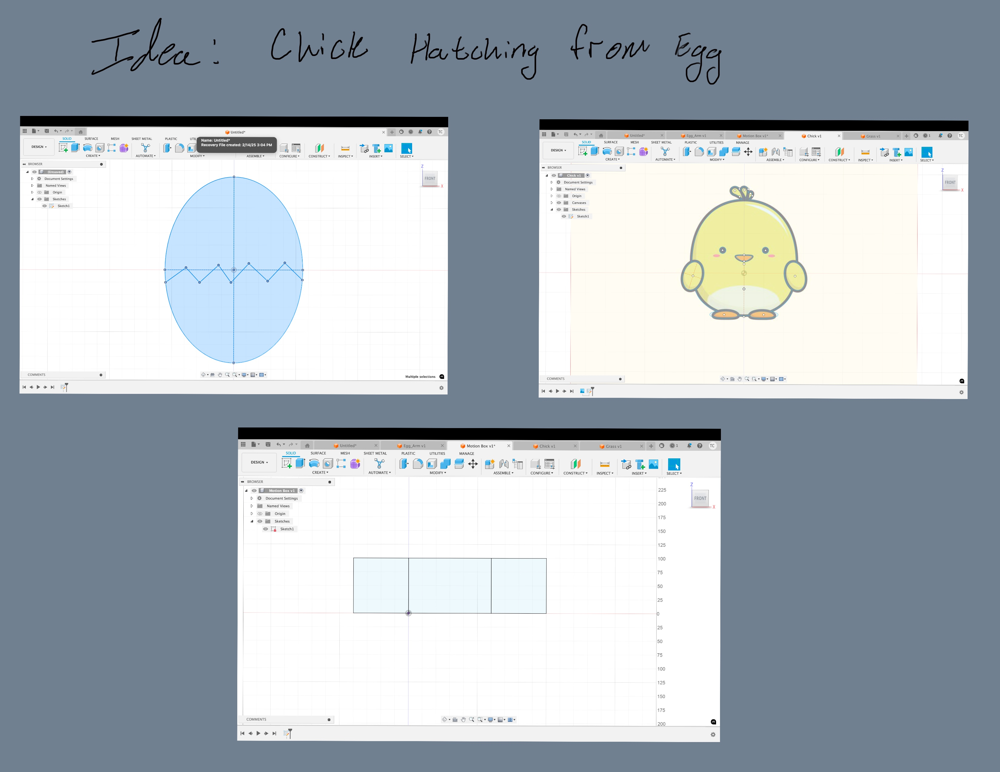

<div class="textcontainer">
<p class="margin"> </p>
<h3>Week 3: Hand Tools and Fabrication</h3>
<h4>Kinetic Sculpture</h4>
<video width="320" controls>
<source src="egg_demo.mp4" type="video/mp4">
Your browser does not support the video tag.
</video>
<div class="center-row">

<p id="aboutme">
</p>
</div>
<h5> For this project I wanted to build a kinetic sculpture that
had an chick coming out of an egg that was cracking
</h5>
<br><br>
<div class="center-row">
<p id="aboutme">
</p>
</div>
<h5>
I landed on using a crankshaft since i felt the chick would
not have enough
weight to maintain its shaft agaianst a cam assembly.<h5>
<div class="center-row">
<p id="aboutme">
</p>
</div>
</h5> Problems later arose with
the crank shaft when excessive lateral motion from the
connecting rods causing excessive stress
on the joint of the cracking egg upper to lower assembly.
</h5>
<div class="center-row">
<p id="aboutme">
</p>
</div>
<h5> The last problem I encountered was hitching of the push rods
caused by excessive freedom of the wire wrapped around the crank
pushing itself off the crank arm. the fix for this was trapping a
bushing within the crank and attaching the wire pushrod to it.
</h5>
</div>